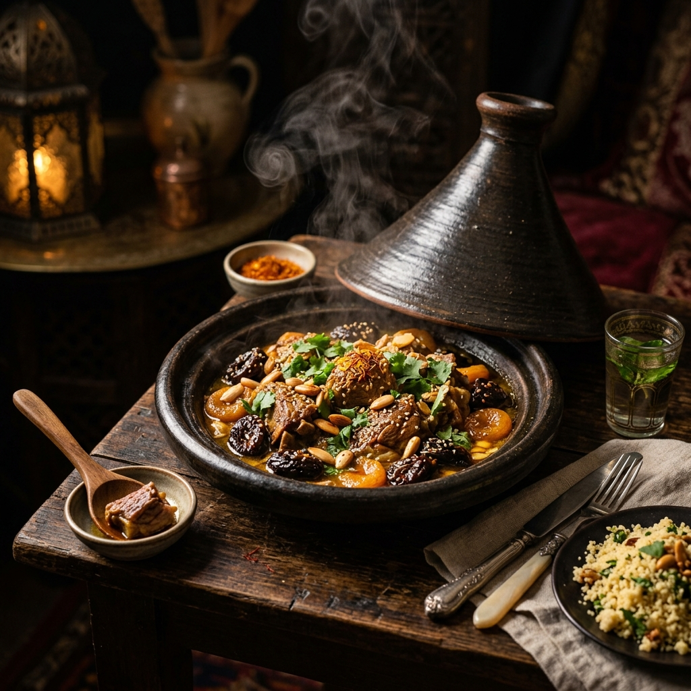
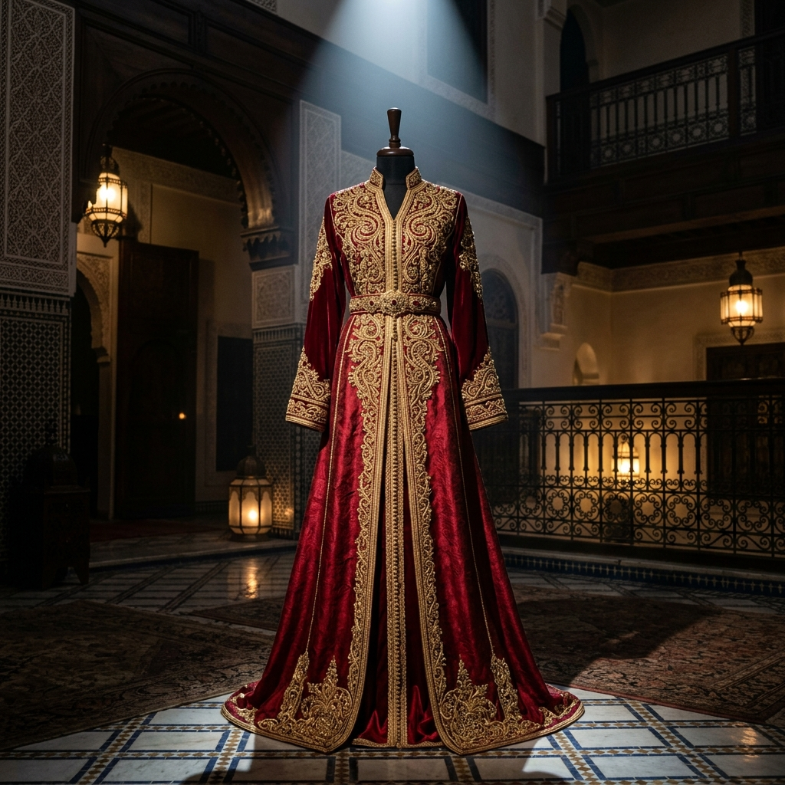
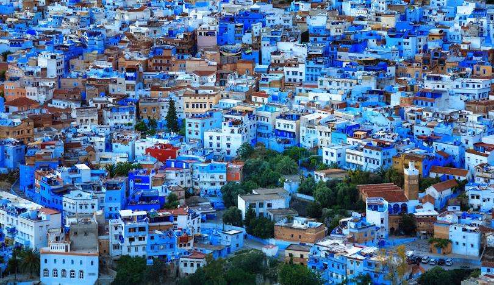

Ce qui vous inspire
Explorez par Thème


Bienvenue au Royaume des Sens
Laissez-vous envoûter par les couleurs, les saveurs et l'hospitalité légendaire d'un pays millénaire aux mille contrastes.
31.6295° N, 7.9811° W
30.4278° N, 9.5981° W
34.0181° N, 5.0078° W
31.5085° N, 9.7595° W


12 MAI 2026
Un espace dédié à la préservation des savoir-faire ancestraux marocains...
Lire plus
10 MAI 2026
Découvrez les artistes internationaux qui rejoindront les Maâlems...
Lire plus
05 MAI 2026
De nouveaux écolodges ouvrent leurs portes pour les amoureux de nature...
Lire plus
Mijoté à l'étouffée dans son plat d'argile, symbole de partage.

Le plat sacré du vendredi, harmonie de semoule et sept légumes.

L'élégance du sucré-salé fassi dans une feuille de brick croustillante.

Soupe onctueuse et réconfortante, cœur battant du Ramadan.

Un délice traditionnel au poulet, lentilles et feuilles de crêpes.

Mignardise mielleuse au sésame, incontournable douceur.

Le "Whisky Berbère", symbole universel de l'hospitalité.

Agneau rôti à la perfection, croustillant et fondant.

Patrimoine de l'UNESCO, une musique de transe spirituelle aux racines africaines profondes.
De la finesse du zellige à la noblesse du tapis, un savoir-faire transmis de maître en apprenti.
L'âme berbère du Maroc, avec sa langue Tamazight et ses traditions millénaires préservées.
L'art de vivre entre patios secrets des Riads et kasbahs majestueuses aux portes du désert.
Une immersion magique sous les étoiles des dunes de Merzouga.

Randonnées épiques au cœur de l'Atlas majestueux.

Sensations fortes entre Kitesurf et Surf sur la côte Atlantique.
Le spot mondial où la lagune rencontre le Sahara.
Explorez les villages isolés du Toubkal avec nos guides locaux.
Vols directs mondiaux vers Casablanca et Marrakech. Excellent réseau de train (TGV) et autocars.
Comptez 50€ à 150€ par jour. La monnaie est le Dirham (MAD). Cartes acceptées partout.
Riads intimes dans les médinas, palaces luxueux ou bivouacs confortables dans le Sahara.
Le printemps (Mars à Mai) et l'automne (Septembre à Novembre) sont les saisons idéales.
L'Arabe (Darija) et l'Amazigh sont officiels. Le Français et l'Anglais sont très parlés.
Vêtements respectueux, acceptez le thé, et pratiquez l'art du marchandage avec le sourire.
Village saharien aux portes de l'Erg Chebbi, l'une des plus spectaculaires étendues de dunes du Sahara marocain. Ici, le temps s'arrête : randonnées chamelières au coucher du soleil, nuits sous les étoiles dans des haimas berbères, et l'immensité dorée du désert à perte de vue.

L'Erg Chebbi s'étend sur près de 50 km de long et atteint 150 mètres de hauteur. Les dunes changent de couleur tout au long de la journée, passant du jaune doré au rouge orangé au coucher du soleil, offrant un spectacle visuel unique.
📍 Sud-est du Maroc · Meilleur au lever/coucher du soleil
Lac salé saisonnier qui se remplit après les fortes pluies. Il attire des flamants roses et d'autres oiseaux migrateurs, créant un contraste saisissant avec le désert environnant.
📍 Près de Merzouga · Flamants roses · Observation d'oiseaux
Oasis luxuriante comprenant palmiers, potagers et canaux d'irrigation traditionnels appelés khetaras. Divisée en 50 parcelles familiales cultivant dattes, maïs, poivrons et plus de 20 variétés.
📍 Hassilabied · Agriculture traditionnelle · Palmeraie
Anciennes mines de khol datant du début du XXe siècle. Actives pendant la période coloniale française, elles furent abandonnées en 1956 lors de l'indépendance du Maroc. Accès en 4x4 uniquement.
📍 10 km à l'est · 4x4 recommandé · Histoire coloniale
Petit musée fascinant dédié aux véhicules 4x4 tout-terrain, présentant une collection d'environ 30 Jeep vintage datant des années 1900 aux années 2014.
📍 Merzouga · Collection vintage · 4x4 historiques
Situé dans le village Gnaoua, ce musée retrace l'histoire de cette musique unique. Les habitants sont des Africains noirs berbérophones, originaires du Mali, Soudan et Sénégal. Instruments traditionnels et performances live.
📍 Khamlia · Musique Gnaoua · Culture africaine


Descendants d'esclaves d'Afrique subsaharienne, les Gnaouas ont développé une culture musicale unique mêlant rythmes africains et mélodies berbères. À Khamlia, assistez à des performances hypnotiques.
📍 Khamlia · Musique traditionnelle · UNESCO
Objets en cuir fabriqués selon des techniques traditionnelles, tapis berbères tissés à la main par les femmes des villages environnants, et souvenirs typiques du Sahara.
📍 Merzouga & villages · Cuir · Tapis
Célébration annuelle de la culture du désert. Spectacles de musique gnawa, danse saharienne, poésie berbère et expositions d'artisanat dans un cadre magique sous les étoiles.
📍 Merzouga · Annuel · Musique · Danse
Célébration annuelle des coutumes des nomades sahariens. Rencontre entre les tribus du désert, courses de chameaux, musique et contes autour du feu.
📍 Merzouga · Annuel · Nomades · Traditions
Traversée des dunes à dos de dromadaire, perpétuant la tradition millénaire des caravanes du sel. Le coucher du soleil sur l'Erg Chebbi à dos de chameau est une expérience inoubliable.
🐪 Durée : 1-2h · Coucher de soleil inclus
Nuit dans une tente berbère traditionnelle sous un ciel étoilé d'une clarté exceptionnelle. Dîner autour du feu, musique berbère, et lever du soleil sur les dunes dorées.
⛺ Nuit complète · Repas inclus · Musique
Surf sur les dunes de sable, activité ludique et sensationnelle sur les pentes de l'Erg Chebbi. Accessible à tous, équipement fourni par les camps.
🏂 Équipement fourni · Tous niveaux.jpg)
Le ciel du désert est l'un des plus clairs au monde. La Voie lactée est visible à l'œil nu, offrant un spectacle astronomique exceptionnel loin de toute pollution lumineuse.
🌟 Ciel sans pollution · Voie lactée visible
Traversée des dunes en véhicule tout-terrain, visites des mines de M'Fis, du lac Dayet Srji et des villages nomades. Aventure et découvertes garanties.
🚙 Demi-journée · Mines · Oasis · VillagesMerzouga se visite toute l'année, mais les meilleures périodes sont le printemps (mars-mai) et l'automne (septembre-novembre) pour éviter la chaleur extrême de l'été (>45°C) et le froid de l'hiver la nuit. Prévoyez 2 à 3 jours minimum : une nuit en bivouac est indispensable pour vivre le Sahara authentique. Apportez des lunettes de soleil, écharpe pour le sable, et bonnes chaussures de marche. Le lever de soleil sur l'Erg Chebbi est magique — réveillez-vous tôt !
Nichée à 1 650 mètres d'altitude dans le Moyen-Atlas, Ifrane est une ville à part au Maroc. Architecture européenne, forêts de cèdres millénaires, lacs cristallins et neige en hiver : un dépaysement total au cœur du royaume.

Symbole emblématique d'Ifrane, ce lion sculpté dans un bloc de pierre par un prisonnier allemand durant la Seconde Guerre mondiale trône au cœur de la ville. Devenu l'icône incontournable de la cité, il est le sujet de toutes les photos des visiteurs.
📍 Centre-ville · Sculpture historique · WWII
Magnifique lac naturel situé à quelques kilomètres d'Ifrane, entouré de forêts de pins et de chênes-lièges. Lieu idéal pour observer les oiseaux migrateurs, notamment les canards et les cigognes. Un havre de sérénité en toute saison.
📍 10 km d'Ifrane · Observation oiseaux · Pique-nique
À 17 km d'Ifrane, la forêt de cèdres d'Azrou abrite l'une des plus grandes populations de macaques de Barbarie du Maroc. Ces singes semi-sauvages vivent librement parmi des cèdres centenaires atteignant 40 mètres de hauteur. Une expérience animalière unique en Afrique du Nord.
📍 Azrou · Macaques de Barbarie · Cèdres centenaires
S'étendant sur plus de 53 000 hectares, ce parc national protège l'une des plus belles forêts de cèdres d'Afrique du Nord. On y trouve cerfs de Barbarie, sangliers, renards et une biodiversité floristique exceptionnelle avec des espèces endémiques rares.
📍 Région d'Ifrane · 53 000 ha · Biodiversité
Seule station de ski du Maroc dotée d'un cratère volcanique, Michlifen offre des pistes enneigées de décembre à mars. À 2 000 mètres d'altitude, cette station familiale accueille aussi bien les débutants que les skieurs confirmés dans un cadre naturel exceptionnel.
📍 Michlifen · Ski · Décembre à Mars · 2 000m
Fondée en 1995 par le Roi Hassan II et le Roi Fahd d'Arabie Saoudite, cette université anglophone de standing international est l'une des plus prestigieuses d'Afrique. Son campus architectural impressionnant, inspiré des universités américaines, mérite une visite.
📍 Ifrane · Campus · Architecture remarquable


La région d'Ifrane est le cœur de la tribu des Aït Youssi et des Béni Mguild. Leur culture vivace se manifeste à travers la langue Tamazight, les tapis géométriques aux couleurs vives et les célébrations saisonnières liées aux cycles agricoles.
📍 Région Ifrane · Tamazight · Tribus berbères
Les tapis des tribus Béni Mguild d'Ifrane et d'Azrou sont parmi les plus beaux du Maroc : laine épaisse et veloutée, motifs géométriques en losanges sur fond rouge ou orange, tissés entièrement à la main par les femmes des villages.
📍 Azrou · Tapis Béni Mguild · Laine de montagne
Chaque automne, la région célèbre la récolte des pommes du Moyen-Atlas avec un festival coloré. Dégustation de variétés locales, expositions artisanales, musique amazigh et marché de produits du terroir dans une ambiance chaleureuse.
📍 Azrou · Automne · Festival du terroir
Les moussems (pèlerinages-fêtes) des tribus du Moyen-Atlas réunissent des centaines de familles pour honorer leurs saints patrons. Fantasia, musique ahidous, danses collectives et grande solidarité communautaire.
📍 Villages du Moyen-Atlas · Estival · Ahidous
Des sentiers balisés à travers les forêts millénaires du Parc National. Les itinéraires varient de 2h à plusieurs jours, permettant de découvrir lacs, cascades et villages berbères isolés. La faune et la flore sont exceptionnelles.
🥾 Tous niveaux · Guides locaux disponibles
Ifrane se transforme en station alpine de décembre à mars. Ski alpin à Michlifen et Jbel Hebri, luge, promenades en raquettes et sorties en 4x4 dans la neige. Le seul endroit au Maroc où l'on peut skier.
⛷️ Déc-Mars · Location matériel · Moniteurs
Les rivières Oum Er-Rbia, Oued Tizguit et les lacs du Moyen-Atlas sont parmi les meilleurs spots de pêche à la truite d'Afrique. Une activité paisible dans des paysages d'une beauté rare, accessible avec un permis de pêche local.
🎣 Avr-Oct · Permis requis · Guides disponibles
À la cédraie d'Azrou, les macaques de Barbarie vivent en liberté parmi les cèdres. Ces singes curieux et familiers approchent facilement les visiteurs. Une expérience inoubliable à partager en famille dans un cadre forestier majestueux.
🐒 Azrou · Toute l'année · Famille
Les routes forestières et pistes du Moyen-Atlas offrent des parcours VTT exceptionnels. De l'itinéraire familial autour des lacs aux descentes techniques dans la cédraie, pour tous les niveaux avec location de vélos à Ifrane.
🚵 Location sur place · Tous niveaux · Printemps-AutomneIfrane se visite idéalement au printemps (avril-mai) pour les fleurs et la verdure, ou en hiver (décembre-février) pour la neige et le ski. L'été reste agréable grâce à l'altitude (20-25°C). Prévoyez des vêtements chauds même en été car les nuits sont fraîches. La ville est très propre et calme — parfaite pour se ressourcer après l'effervescence de Fès. Combinez avec une visite à Azrou (17 km) pour les macaques et le souk du mardi, très authentique. À ne pas manquer : le lever du soleil sur la cédraie enneigée en hiver.
Aux confins du Grand Atlas et du Sahara, Ouarzazate règne sur un paysage de kasbahs ocres et de vallées de palmiers. Décor naturel de centaines de films hollywoodiens, cette ville hors du temps garde l'âme des grandes caravanes du sel et de l'or.

Ksar (village fortifié) classé au Patrimoine Mondial de l'UNESCO depuis 1987, Aït Ben Haddou est un chef-d'œuvre de l'architecture de terre du Maroc pré-saharien. Ses kasbahs de pisé orangé se reflétant dans l'Oued Ounila ont servi de décor à Gladiator, Lawrence d'Arabie et Game of Thrones.
📍 32 km d'Ouarzazate · UNESCO · Gladiator · GOT
Joyau architectural du XVIIIe siècle, cette kasbah monumentale fut la résidence principale des Glaoui, puissants pachas du Sud marocain. Son dédale de couloirs, ses salles décorées de zellige et de stuc, et ses terrasses panoramiques sur la ville en font le monument phare d'Ouarzazate.
📍 Centre-ville · XVIIIe s. · Glaoui · Musée
Les plus grands studios de cinéma d'Afrique et parmi les plus importants au monde. Créés en 1983, ils ont accueilli des productions légendaires : Gladiator, Babel, Prince of Persia, Kingdom of Heaven, et des séries comme Game of Thrones. Visite guidée des décors monumentaux ouverte au public.
📍 Ouarzazate · Hollywood d'Afrique · Visite guidée
Surnommée la "Route des Kasbahs", la vallée du Dadès s'étend sur 120 km entre Ouarzazate et Boumalne. Les gorges du Dadès offrent des paysages vertigineux de roches rouges sculptées par l'érosion, avec des kasbahs perchées sur les hauteurs et des villages de roses au printemps.
📍 120 km · Route des Kasbahs · Roses de mai
L'une des plus longues palmeraies du monde s'étire sur 200 km entre Ouarzazate et Zagora. Des milliers de palmiers-dattiers bordant l'oued Drâa, avec des kasbahs de pisé émergent entre les dunes et les oasis. La route vers Zagora au coucher du soleil est l'un des plus beaux panoramas du Maroc.
📍 200 km vers Zagora · Palmeraie · Kasbahs
Ce musée unique retrace l'histoire cinématographique de la ville à travers costumes, accessoires, photos de tournage et affiches de films. Une plongée fascinante dans les coulisses des plus grandes productions hollywoodiennes tournées dans la région.
📍 Ouarzazate · Costumes · Accessoires · Photo


Chaque année, Ouarzazate célèbre son identité cinématographique avec un festival international réunissant réalisateurs, acteurs et cinéphiles du monde entier. Projections en plein air devant les kasbahs illuminées, rencontres avec les équipes de films et rétrospectives des tournages historiques.
📍 Ouarzazate · Annuel · Cinéma international
Les artisans d'Ouarzazate perpétuent des savoir-faire millénaires : sculpture sur pierre de tafraout, bijoux touaregs en argent et pierres semi-précieuses, poteries à l'engobe rouge caractéristique du Grand Sud et tapis à motifs géométriques berbères.
📍 Souks · Bijoux · Poterie · Sculpture
Tradition séculaire des tribus berbères du Grand Atlas, l'Ahwach est une danse collective où hommes et femmes se font face en deux rangs. Accompagnés de bendir (tambour) et de chants polyphoniques, les danseurs créent une communion hypnotique lors des moussems et célébrations.
📍 Villages · Fêtes · Patrimoine UNESCO
Chaque mai, la vallée du Dadès se couvre de roses de Damas en fleurs. Le festival de Kelâat M'Gouna réunit des milliers de visiteurs pour célébrer la récolte des pétales : élection de la Reine des Roses, parade florale, distillation de l'eau de rose et marché de produits à la rose.
📍 Kelâat M'Gouna · Mai · Roses de Damas
Traversez l'oued à pied pour atteindre le ksar et grimpez jusqu'au grenier communautaire fortifié pour une vue panoramique sublime. Un guide local vous racontera l'histoire de ce village habité depuis le XIe siècle et ses liens avec Hollywood.
🏰 32 km · Guide recommandé · 2-3h de visite
Excursions en quad ou en 4x4 à travers les paysages de hammada (désert de pierres), les dunes et les villages abandonnés de la région. Plusieurs opérateurs proposent des circuits d'une demi-journée à plusieurs jours vers Zagora et Merzouga.
🏍️ Demi-journée à 3 jours · Location sur place
Départ de la région d'Ouarzazate pour des treks de plusieurs jours dans le versant sud du Haut Atlas. Villages berbères isolés, cols enneigés, rencontre avec les nomades et bivouacs sous les étoiles. Le trek du Mgoun (4 068m) est l'un des plus beaux du Maroc.
🧗 3 à 10 jours · Guides certifiés · Toubkal voisin
Le spectacle des kasbahs qui rougeoient au crépuscule sur fond de montagne est inoubliable. Les spots incontournables : le toit de la Kasbah Taourirt, les berges de l'oued devant Aït Ben Haddou, ou les hauteurs de Tifoultoute.
🌅 Gratuit · Coucher du soleil · Photo
À quelques kilomètres d'Ouarzazate, la centrale solaire NOOR est la plus grande au monde avec 3 000 hectares de miroirs paraboliques. Un symbole du Maroc vert qui impressionne par son échelle pharaonique. Visites organisées pour les groupes.
☀️ 3 000 ha · Visite groupes · Technologie verteOuarzazate se visite idéalement au printemps (mars-mai) pour les roses du Dadès et les températures idéales, ou en automne (sept-nov) pour la récolte des dattes. L'été peut être très chaud (40°C+). Prévoyez 3 à 4 jours minimum pour couvrir Aït Ben Haddou, la vallée du Dadès, les studios et le lac du barrage Al Mansour. Louez un véhicule : les kasbahs et vallées sont dispersées sur des dizaines de kilomètres. À ne pas rater : le lever du soleil sur Aït Ben Haddou depuis l'autre rive — lumière dorée absolument magique pour les photos.
Chefchaouen est une ville située dans les montagnes du Rif au nord du Maroc, célèbre pour sa médina aux maisons bleues, son patrimoine andalou et ses paysages naturels uniques.

Ancienne forteresse construite au XVe siècle, la kasbah protégeait la ville contre les invasions portugaises. Aujourd'hui, elle abrite un musée ethnographique et un jardin andalou.
📍 XVe siècle · Musée ethnographique · Jardin andalou
Située près de la place principale, cette mosquée est célèbre pour son minaret octogonal rare au Maroc et son architecture inspirée du style andalou.
📍 Minaret octogonal · Style andalou · Architecture unique
Cette place historique est le cœur vivant de la médina. Entourée de cafés et de bâtiments anciens, elle représente le centre culturel et social de Chefchaouen.
📍 Cœur de la médina · Cafés · Centre culturel
Ras El Ma est une source naturelle située à l'entrée de la médina. Autrefois utilisée pour laver le linge et alimenter la ville en eau, elle reste un lieu emblématique et paisible.
📍 Source naturelle · Emblématique · Lieu paisible
Construite dans les années 1920 sur une colline dominant la ville, elle offre aujourd'hui l'une des plus belles vues panoramiques sur Chefchaouen et les montagnes du Rif.
📍 Années 1920 · Vue panoramique · Colline du Rif
Les remparts historiques entourent encore certaines parties de la vieille ville. Ils rappellent le rôle défensif de Chefchaouen pendant les périodes de conflits régionaux.
📍 Vieille ville · Patrimoine défensif · Histoire régionale


L'identité traditionnelle des habitants des montagnes du Rif se distingue par les vêtements rayés colorés, les tissus artisanaux, les chants populaires et un mode de vie attaché à la nature et à la communauté.
📍 Montagnes du Rif · Traditions ancestrales · Identité berbère
Les murs peints en bleu représentent l'image la plus célèbre de Chefchaouen. Cette tradition serait liée à l'héritage andalou et juif de la ville, créant une ambiance calme et fraîche dans la médina.
📍 Médina bleue · Héritage andalou · Patrimoine unique
Chefchaouen est connue pour ses tapis tissés à la main, couvertures jeblies, objets en laine et travail du cuir. Les artisans utilisent encore des méthodes transmises entre générations.
📍 Tapis · Laine · Cuir · Méthodes ancestrales
La ville possède une forte influence musicale andalouse et rifaine. Les fêtes locales accueillent souvent des groupes jouant du oud, du violon andalou et des chants traditionnels spirituels.
📍 Oud · Violon andalou · Chants spirituels
Les souks de Chefchaouen restent très authentiques. On y trouve des produits locaux, des épices, des vêtements traditionnels et une atmosphère conviviale qui reflète la vie quotidienne rifaine.
📍 Épices · Vêtements · Vie authentique rifaine
Chefchaouen accueille plusieurs festivals artistiques et spirituels, notamment des événements liés à la musique andalouse, aux arts de rue et à la culture méditerranéenne, attirant artistes et visiteurs du monde entier.
📍 Musique · Arts de rue · Culture méditerranéenneLes visiteurs aiment marcher dans les petites ruelles bleues pour découvrir les escaliers décorés, les portes artisanales et l'atmosphère paisible typique de Chefchaouen.
🚶 Balade libre · Escaliers décorés · Portes artisanales
Akchour attire les amoureux de nature grâce à ses cascades, ses sentiers montagneux et son célèbre pont rocheux naturel appelé "God's Bridge".
🥾 Cascades · God's Bridge · Sentiers naturels
Le parc national de Talassemtane est parfait pour les randonnées, le camping et l'exploration des paysages naturels du Rif avec ses forêts et ses montagnes.
🌲 Randonnées · Camping · Forêts du Rif
Les touristes peuvent goûter les spécialités rifaines comme les tajines locaux, le fromage de chèvre et le pain jebli dans une ambiance authentique.
🍽️ Tajines · Fromage · Pain jebli · Ambiance authentic
Les marchés traditionnels proposent des tapis tissés à la main, des vêtements jeblis, des produits naturels et des objets artisanaux typiques de la région.
🛍️ Tapis · Vêtements jeblis · Produits naturels
Les cafés situés sur les hauteurs de la ville offrent une ambiance calme avec une vue magnifique sur les montagnes et les maisons bleues.
☕ Vue panoramique · Montagnes · Maisons bleues
Des guides locaux organisent des excursions pour découvrir les villages voisins, les paysages ruraux et la culture montagnarde rifaine.
🏔️ Guides locaux · Villages · Culture rifaine
Chefchaouen accueille des événements artistiques et musicaux qui permettent aux visiteurs de découvrir la culture andalouse et les traditions locales.
🎭 Musique andalouse · Arts · Traditions localesChefchaouen se visite idéalement au printemps (mars-mai) pour les lumières douces et les températures agréables, ou en automne (sept-nov) pour éviter la foule estivale. Prévoyez 2 à 3 jours minimum pour explorer la médina, faire la randonnée à Akchour et visiter la Mosquée Espagnole pour le coucher du soleil. Portez des chaussures confortables : les ruelles sont pavées et en pente. À ne pas rater : les premières heures du matin dans la médina, avant l'afflux touristique — la lumière bleue est absolument magique.